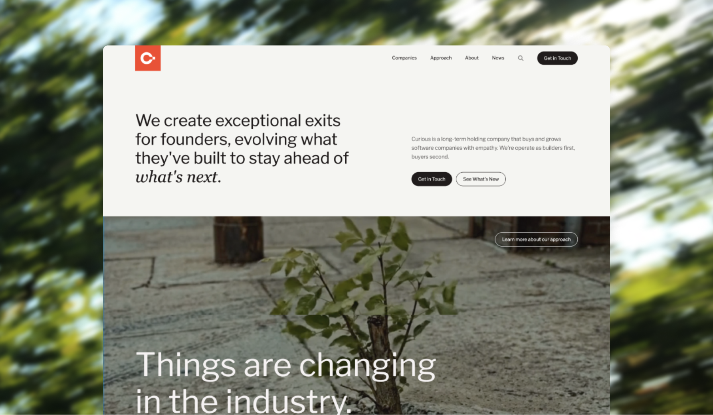

Curious is a holding company that builds and acquires software products. As product and design lead, I work across the full portfolio — setting product direction, creating shared design infrastructure, and making sure the work across companies feels coherent without being homogeneous.
The challenge isn't any one product. It's building systems that let small teams move fast without accumulating design debt, while keeping each product's identity distinct.
Each product in the portfolio had grown independently. Different component libraries, different visual languages, different ways of thinking about users. The overhead of context-switching between products was slowing teams down, and inconsistency was starting to show up in the products themselves.
Cross-portfolio design audit, mapping inconsistencies across four products
Rather than forcing a single unified system, I built a shared foundation — tokens, primitives, and documentation standards — that each product could extend. Teams kept their product-specific components but shared the underlying layer.
Alongside the system work, I introduced lightweight product rituals: weekly cross-team syncs, a shared roadmap format, and a quarterly review process that keeps portfolio-level priorities visible without creating bureaucracy.
Shared token layer
Component documentation standards
Design velocity across the portfolio increased noticeably within two quarters. New features that would have required weeks of back-and-forth on patterns now ship with shared primitives and minimal design review needed.
More importantly, the products feel related without feeling identical — each has a distinct character that the shared system supports rather than suppresses.